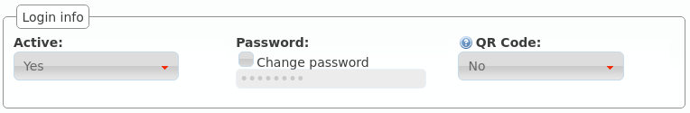
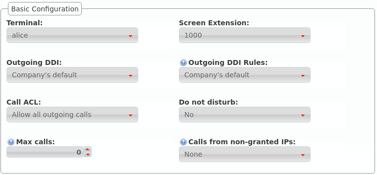
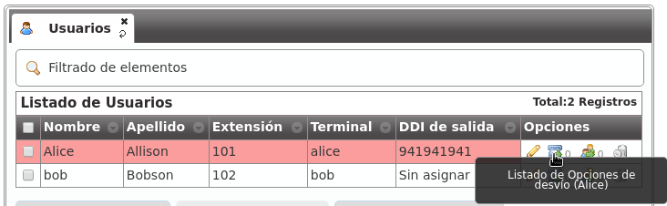

Usuarios¶
El proceso de instalación nos creó a Alice y a Bob, y esto nos permitió ahorrar mucho tiempo a la hora de conseguir que se llamarán entre ellos.
También nos permitió pasar un poco de puntillas por la sección de Usuarios, que ahora pasamos a definir en profundidad.
Datos personales¶

- Nombre
Se utilizará para referenciar al usuario en múltiples ámbitos, incluyendo el nombre que se presenta en llamadas internas.
- Apellidos
Irá junto con el Nombre en casi todos los casos.
Dirección de correo electrónico del usuario al que se enviarán los mensajes de voz del buzón.
- Código de país / Código de área
Define cómo llama el usuario y qué formato tendrán los números externos que se le presenten.
- Idioma
Cuando una locución se le reproduzca a este usuario, se usará este idioma.
- Zona horaria
Las llamadas listadas en el portal de usuario mostrarán las horas en esta zona horaria.
Credenciales portal de usuario¶
- Activo
Da posibilidad al administrador de la plataforma de desactivar el acceso al portal de usuario.
- Contraseña
Contraseña para acceder al portal de usuario.
- Código QR
Si está activo, mostrará un código QR en el portal de usuario que permitirá configurar los softphones Grandstream Wave.
Configuración básica¶
- Terminal
Los terminales dados de alta en Terminales se listan aquí para realizar la vinculación usuario-terminal.
- Extensión principal
Tal y como se explicaba en Extensiones, fija la extensión del usuario para llamadas internas.
- DDI de salida
Adelantado en Configurar DDI saliente, determina el número que presenta el usuario en llamadas externas salientes.
- Reglas DDI de salida
Gestiona excepciones al parámetro anterior. Leer Reglas DDI de salida para más referencia.
- Permisos de llamada
Asignación de un grupo de permisos explicado en profundidad aquí.
- No molestar
Impide que nadie pueda llamar a este usuario, sin impedirle a él llamar a donde desee.
- Límite de llamadas
Limita el número de llamadas recibidas si el usuario está gestionando un número igual o superior a este límite. El valor 0 desactiva el límite.
- Llamadas desde IPs no autorizadas:
Permitir a este usuario llamar desde IPs no autorizadas. Se limita el número de llamadas salientes para evitar fraude. Seleccionar ‘Ninguna’ permite un número ilimitado de llamadas siempre y cuando se cumpla la política de restricción de IPs de la empresa. Leer Usuarios remotos para más información.
Buzón de voz¶

- Buzón de voz
Activa o desactiva la existencia del buzón de voz del usuario. Aparte de existir, como veremos más adelante, habrá que desviar las llamadas que queramos al buzón.
- Locución de buzón
Esta locución se reproduce como locución de bienvenida al buzón de voz cuando alguien va a dejar un mensaje de voz al usuario. Solo se reproduce para los desvíos al buzón de voz descritos en desvíos a buzón.
- Notificar por email
Mandar a la dirección del usuario un correo notificando del mensaje de voz.
- Adjuntar audio del mensaje
Adjuntar o no en dicho mail el audio del mensaje
Nota
Si no se configura ninguna locución de buzón, se utilizará la locución por defecto, siempre y cuando el usuario no haya grabado su locución personal utilizando el menú de voz (llamando al código de servicio del buzón de voz).
Jefe-Asistente¶

La funcionalidad jefe-asistente impide que un usuario sea molestado por nadie que no sea:
Su asistente.
Origenes que coincidan con la lista blanca.
Toda llamada con destino a un jefe será desviada al asistente.
- Jefe
Indica que el usuario en cuestión es jefe o no.
- Asistente
Si el usuario es jefe, indica quién es su asistente.
- Lista blanca
Listas de coincidencia con los orígenes que pueden llamar directamente al jefe.
Con la configuración de la imagen, toda llamada a Alice acabará en Bob, salvo las que haga el propio Bob y aquellas cuyo origen coincida con la lista Alice’s friends.
Pertenencia a grupos¶

Tal y como se verá en las secciones Grupos de salto y Capturas de llamada, un usuario puede pertenecer a uno o a varios grupos de captura y grupos de salto.
Aparte de poder configurar dicha pertenencia desde las propias secciones Grupos de salto y Capturas de llamada, se puede añadir al usuario que estamos editando a los grupos de captura y grupos de salto deseados que ya existan.
En el caso de la pertenencia a grupos de salto, también se puede configurar desde el listado general:

Desvíos de llamada¶
Los desvíos de las llamadas de un usuario concreto se configura pulsando el siguiente botón:
Estos son los campos y los posibles valores:
- Activado
Determina si el desvío debe aplicarse o no. De esta forma, un usuario puede configurar los desvíos que más utilice e ir activándolos y desactivándolos.
- Tipo de llamada
Limita el desvío a cierto tipo de llamadas, a elegir entre externa, interna o ambas
- Tipo de desvío
Indica cuándo aplica el desvío:
Incondicional: siempre
Perdida: cuando no se conteste al de X segundos
Ocupado: cuando el usuario esté ocupado (hablando o con el No molestar activo)
No registrado: cuando el usuario tenga su terminal sin conectar con IvozProvider
- Tipo de destino
Indica a dónde se enviará la llamada cuando el desvío aplique:
Buzón de voz
Número (externo)
Extensión (interna)
Consejo
Si queremos desviar a un grupo de salto, por ejemplo, bastaría con crear una extensión que apunte al grupo de salto deseado y seleccionar Extensión en el Tipo de destino.